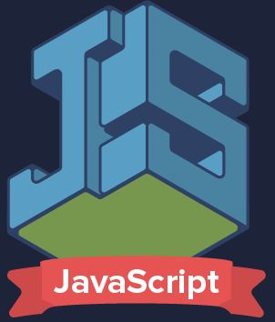

JavaScript is a programming or scripting language that allows you to implement complex functions in web pages, every time a web page does more than just sit there and display static information for you to see, it displays timely content updates, interactive maps , 2D / 3D graphics animation, video player scrolling, etc., you can bet that JavaScript is probably involved.
JavaScript is the programming language that you must use to add interactive features to your website, (for example, games, events that occur when buttons are pressed or data is entered in forms, dynamic style effects, animation, and much more. plus).
The DOM is the structure of objects that the browser generates when a document is loaded and can be altered using Javascript to dynamically change the contents and appearance of the page.
Application Programming Interfaces (APIs) are constructs available in programming languages that allow developers to create complex functionalities in a simple way. They abstract the more complex code to provide a more user-friendly syntax instead.
Instagram, GitHub, Wikipedia, ChatCompose and Google Translate
You can do almost anything with JavaScript. You can start with little things like carousels, image galleries, fluctuating layouts, and responses to button presses. Browser Application Programming Interfaces (APIs) Third party APIs Third-party frameworks and libraries that you can apply to your HTML so you can quickly build and publish sites and applications.
You can do this by using the script script tag that should wrap all the JS code you write. JS code can be added: between head tags between body tags Depending on where you add the JavaScript code in your HTML file, the load will be different. It is generally recommended to add it in the head section so that it remains separate from the content of your HTML file. But placing it inside body can help improve the loading speed, as the website content will load faster, and only after that will the JavaScript be processed.
You can do this using the script / script tag that should wrap all the JS code you write. JS code can be added: between head tags between body tags
Inline comments that start with a double slash: //, and multi-line comments, that start with / * and end with * /.
Depending on how they are measured, the variables may be qualitative or quantitative. Those that express different characteristics or qualities will be qualitative; and they will be quantitative when expressing numerical arguments. Qualitative variations may be classified as: Ordinal or quasi-quantitative.
Flow control Block A statement block is used to group zero or more statements. The block is delimited by a pair of braces. break Terminates the current loop, switch, or label statement and transfers control of the program to the next statement in the terminated statement. continue It ends the execution of the statements within the current iteration of the current loop, and continues the execution of the loop with the next iteration. Empty An empty statement is used to provide a "no statement", even though the JavaScript syntax expected one. if ... else Executes a statement if a specified condition is true. If the condition is false, another statement can be executed. switch Evaluates an expression, matching the value of the expression to a case clause and executes the statements associated with that case. throw Throw a user-defined exception. try ... catch Marks a block of statements to be tried (try) and specifies a response, in case an exception is thrown. Declarations var Declare a variable, optionally initializing it to a value. let Declare a local block scope variable, optionally initializing it to a value. const Declare a read-only constant. Features function Declare a function with the specified parameters. function * Function generators allow you to write iterators more easily. async function Declare an asynchronous function with the specified parameters. return Specifies the value to be returned by a function. class Declare a class. Iterations do ... while Creates a loop that executes a specified statement until the test condition evaluates to false. The condition is evaluated after the statement is executed, resulting in the specified statement being executed at least once. for Creates a loop that consists of three optional expressions, enclosed in parentheses and separated by semicolons, followed by a statement executed in the loop. for each ... in Iterates a specified variable over all the values of the object's properties. For each distinct property, a specified statement is executed. for ... in Iterate over the enumerable properties of an object, in arbitrary order. For each distinct property, instructions can be executed. for ... of Iterates over iterable objects (including array, array-like objects, iterators and generators), invoking a custom iteration hook with statements to be executed for the value of each distinct property. while Creates a loop that executes the specified statement as long as the test condition evaluates to true. The condition is evaluated before executing the statement. Others debugger Invokes any available debugging functionality. If no debugging functionality is available, this instruction has no effect. export Used to allow a signed script to provide properties, functions and objects to other signed or unsigned scripts. This old Netscape functionality has been removed and will be redefined by the ECMAScript 6 modules. import Used to allow a script to import properties, functions and objects from another signed script that has exported its information. This old Netscape functionality has been removed and will be redefined by the ECMAScript 6 modules. label Provide a statement with an identifier that you can refer to using a break or continue statement. with Extends the scope string for an instruction.
A while loop is a flow control statement that allows code to run repeatedly based on a given Boolean condition. The while loop can be thought of as a repeating if statement. The for loop provides a concise way to write the loop structure. Unlike a while loop, a for statement consumes the initialization, the condition, and the increment / decrement on one line, thus providing a shorter and easier-to-debug loop structure. The do while loop is similar to the while with the only difference that it checks the condition after executing the statements, and is therefore an example of an Exit Control Loop.
result_type function_name (parameter_type parameter_name, ...) { sentence1; sentence2; ... sentenceN; } A function cannot modify any variable defined in the workspace, unless it appears in its output list.
Objects correspond to things found in the real world. For example, an online shopping system could have objects such as: shopping cart, customer, and product. Once the mold is defined, we can use it again to create as many objects as we want that behave in the same way as the one we have defined.
Each XHTML element has its own list of possible events that can be assigned to it. The same type of event (for example, clicking the left mouse button) can be defined for several XHTML elements and the same XHTML element can have different events associated with it. The name of the events is constructed using the prefix on, followed by the English name of the action associated with the event. Thus, the event of clicking an element with the mouse is called onclick and the event associated with the action of moving the mouse is called onmousemove.
onblur An element loses focus button, input, label, select, textarea, body onchange An element has been modified input, select, textarea onclick Click and release the mouse All elements ondblclick Click twice in a row with the mouse All elements onfocus An element gets focus button, input, label, select, textarea, body onkeydown Press and hold a key Form elements and body onkeypress Pressing a key Form elements and body onkeyup Release a pressed key Form elements and body onload Page fully loaded body onmousedown Press and hold a mouse button All elements onmousemove Move the mouse All elements onmouseout The mouse "leaves" the element All elements onmouseover The mouse "enters" the element All elements onmouseup Release mouse button All items onreset Initialize the form form onresize Modify the size of the body window onselect Select a text input, textarea onsubmit Submit form form onunload The page is abandoned, for example when closing the browser body
Client-side languages (which include not only HTML but also Java and Java Script, which are simply included in the HTML code) are those that can be directly "digested" by the browser and do not need pre-treatment. . Distributed computing projects, such as SETI @ home,
Developed by Microsoft Sun Microsystems Yukihiro Matsumoto et al.
Uncaught TypeError : cannot read property, TypeError: ‘undefined’ is not an object (evaluating), TypeError: null is not an object (evaluating), Unknown: Script error, TypeError: Object doesn’t support property, TypeError: ‘undefined’ is not a function, Uncaught RangeError: Maximum call stack, TypeError: Cannot read property ‘length’, Uncaught TypeError: Cannot set property and ReferenceError: event is not defined
Mozilla Firefox, you press Ctrl + Shift + J on a PC or Command + Shift + J if you are on a Mac. Google Chrome, you press the Ctrl + Shift + J keys on a PC or Command + Shift + J if you are on a Mac. Apple Safari, select the Safari menu -> Preferences -> Advanced -> "Show development menu in menu bar". Microsoft Internet Explorer, in the main menu select Tools -> Internet Options -> Advanced then remove the check in the option that says "Disable script debugging" and select the one that says "Diplay a Notification About Every Script Error". Opera, in the main menu select Tools -> Advanced -> Error Console.
If we have a string with a JSON we can transform it into a javaScript object using the JSON function. parse (json) that will return the object corresponding to our JSON.
Create an Array let fruits = ["Apple", "Banana"] console.log (fruits.length) // 2 Copy to Clipboard Access an Array element by its index let first = fruits [0] // Apple let last = fruits [fruits.length - 1] // Banana Copy to Clipboard Traverse an Array fruits.forEach (function (element, index, array) { console.log (element, index); }) // apple 0 // Banana 1 Copy to Clipboard Add an element to the end of an Array let newLength = fruits.push ('Orange') // Add "Orange" at the end // ["Apple", "Banana", "Orange"] Copy to Clipboard Remove the last element from an Array let last = fruits.pop () // Remove "Orange" from the end // ["Apple", "Banana"] Copy to Clipboard Add an element to the beginning of an Array let newLength = fruits.unshift ('Strawberry') // Add "Strawberry" to the beginning // ["Strawberry", "Apple", "Banana"] Copy to Clipboard Remove the first element from an Array let first = fruits.shift () // Remove "Strawberry" from start // ["Apple", "Banana"] Copy to Clipboard Find the index of an element in the Array fruits.push ('Strawberry') // ["Apple", "Banana", "Strawberry"] let pos = fruits.indexOf ('Banana') // (pos) is the position for short // 1
JavaScript 1.0 Browser 2.0 JavaScript 1.1 Browser 3.0 JavaScript 1.2 Browser 4.0-4.05 JavaScript 1.3 Browser 4.06-4.7x JavaScript 1.4 n / a JavaScript 1.5 Browser 6.0 Mozilla 0.6x-0.9x (open source browser) JavaScript 1.6 Mozilla Firefox 1.5 JavaScript 1.7 Mozilla Firefox 2
June 1, 1997 First Edition Guy L. Steele, Jr. 2 June 1998 Editorial changes to keep the full specification aligned with the international standard ISO / IEC 16262 Mike Cowlishaw 3 December 1999 Added regular expressions, better handling of strings, new control of declarations, handling of exceptions with try / catch, stricter definition of errors, format for numeric output and other improvements. Mike cowlishaw 4 Abandoned The fourth edition was abandoned due to political differences regarding the complexity of the language. Many proposed features for the fourth edition were completely abandoned; some were proposed for the ECMAScript Harmony edition. December 5, 2009 Adds "strict mode", a subset intended to provide better error checking and avoid error-prone constructors. It clears up several ambiguities from the third edition, and refines the behavior of "real world" implementations that consistently differ from that specification. It adds some new features, such as getters and setters, a library for JSON support, and a more complete reflection on the properties of objects.11 Pratap Lakshman, Allen Wirfs-Brock 5.1 June 2011 This 5.1 edition of the ECMAScript Standard is fully aligned with the third edition of the international standard ISO / IEC 16262: 2011. Pratap Lakshman, Allen Wirfs-Brock 6 June 201512 The sixth edition adds significant changes to the syntax for writing complex applications, including classes and modules, defining them semantically in the same terms as the strict mode of the ECMAScript 5 edition. Other new features include for / of loops iterators, generators and generator of Python-style expressions, address functions, binary data, collections (maps, sets, weak maps), and proxies (? metaprogramming for virtual objects and wrappers). Being the first specification “ECMAScript Harmony”, it is also known as “ES6 Harmony”. Allen Wirfs-Brock June 7, 2016 The seventh edition was a mere update of version 6. It incorporates the Array.prototype.includes () method and the exponential operator (**). Brian terlson June 8, 2017 The 8th edition, officially known as ECMAScript 2017, was finalized in June 2017. [11] It includes async / await constructors, which work using generators and promises. Brian terlson June 9, 2018 The 9th edition, officially known as ECMAScript 2018, includes rest / spread operators for variables (three dots: ... identifier), asynchronous iteration, Promise.prototype.finally () Brian Terlson January 10, 2019 The 10th edition, officially known as ECMAScript 2019, incorporated Array.flat (), Array.flatMap (), String.trimStart (), String.trimEnd (), optional errors in the catch, Object block. fromEntries (), Symbol.description Mathías Bynens 11 June 2020 View 11th edition - ECMAScript 2020 Jordan Harband, Kevin Smith
The browser made for developers All the latest beta developer tools, plus experimental features like the multi-line console editor and WebSocket inspector. A separate profile and path so you can easily run it in parallel with the official or beta version of Firefox. Custom preferences for web developers: Browser and remote debugging are on by default, as is the dark theme and developer toolbar button.
DevTools Challenger Visual editing tools Performance tools Page inspector Audio web editor Web Console Javascript debugger Network monitor Style editor Responsive design view Valence
It is a standard specification that defines an API implemented in JavaScript for rendering 3D graphics within any web browser.
Phaser framework Phaser is a framework for building games, mobile or desktop, in HTML5. It is new but growing rapidly thanks to the passionate community involved in the development process. You can check it out on GitHub where it's open source. Read the online documentation and browse their large collection of examples. The Phaser framework provides a series of tools that will speed up development and help you handle the generic tasks necessary to complete your game, so that you can focus on the idea of the game itself.
WebSocket is a TCP-based network protocol that establishes how data should be exchanged between networks. Since it is a reliable and efficient protocol, it is used by almost all clients. The TCP protocol establishes connections between two communication endpoints, called sockets. In this way, data exchange can occur in both directions.
These primitives are used by the developer to explicitly allocate and free memory from and to the operating system. At the same time, JavaScript allocates memory when things (objects, strings, etc.) are created and “automatically” frees it up when they are not used anymore, a process called garbage collection.
https://developer.mozilla.org/es/docs/Web/JavaScript